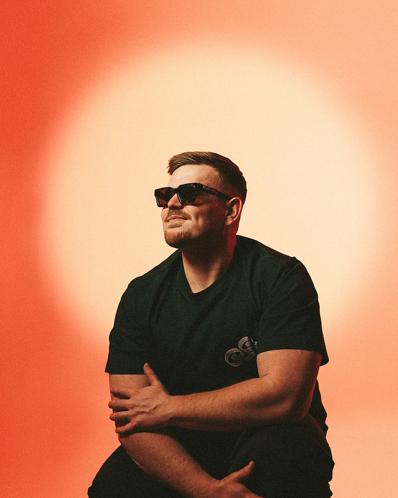

House · Tech · Urban
DJ BIG S
High-energy sets. Infectious, groove-driven productions. One to watch in the next wave of top-tier DJs.

The Sound

DJ BIG S is a rising force in the global house music scene, known for his high-energy sets and infectious, groove-driven productions. With a sound that fuses house, tech, and urban influences, his tracks have gained support from industry heavyweights like Nicky Romero on Protocol Radio and Jengi on Insomniac's Night Owl Radio.
His music has landed on respected labels like Low Ceiling (Don't Blink), Gameroom (Blackhole), Purple Tea, and more — pushing his sound onto festival stages and club sets worldwide. From sold-out hometown shows to commanding dancefloors at Montreal's top venues including Muzique, Red Room, and Motel Motel, DJ BIG S has built a reputation for electrifying performances. His festival appearances at Electric Pines and Magnetic World further showcase his ability to move massive crowds.
He has played direct support for international acts like CID and Corrupt UK, setting the tone for some of the biggest names in the scene. In 2024, he made his MainStage debut at ÎleSoniq, performing alongside Ghetto Birds for their explosive collaboration "Like an 808" — a defining moment in his career. His international footprint continues to grow, with a debut performance in France.
- 2024ÎleSoniq MainStage Debut
- 3+Montreal Flagship Venues
- ∞Global Dancefloors
Stream the Sets
Spotify
SoundCloud

Stages & Support
- ÎleSoniq
- Electric Pines
- Magnetic World
- Muzique
- Red Room
- Motel Motel
- CID
- Corrupt UK